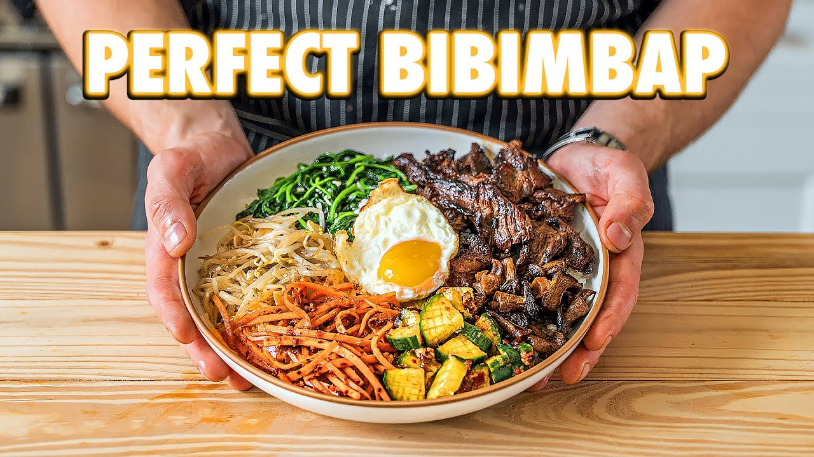

Joshua Weissman's Authentic Bibimbap

Bibim Gochujang Sauce
2.5 tablespoons mirin
3 tablespoons rice vinegar
1 tablespoon honey
2 teaspoons dark soy sauce
2 cloves garlic, grated
2 teaspoons grated ginger
2 teaspoons toasted sesame oil